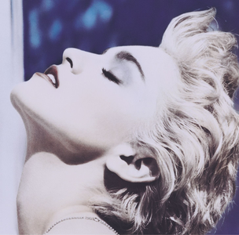
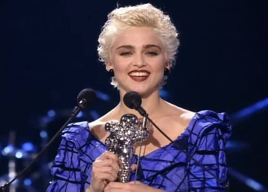
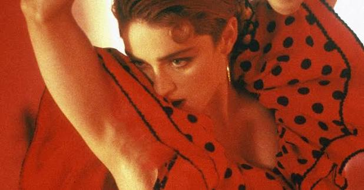
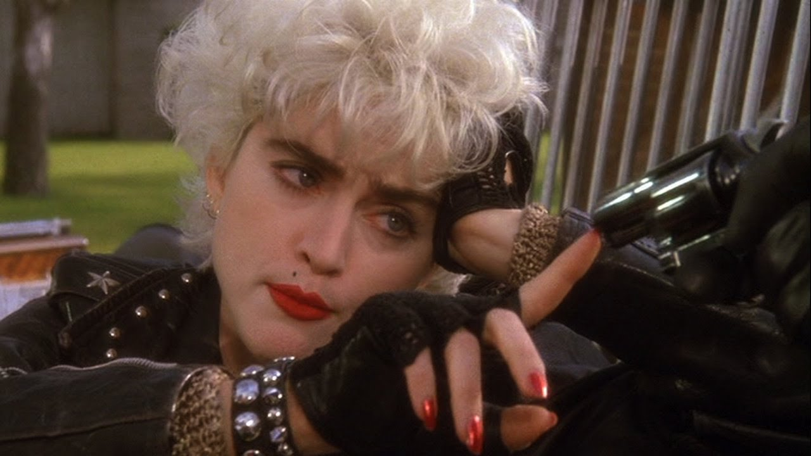

True Blue es el tercer álbum de estudio de Madonna. Lanzado a la venta en 1986, es el álbum más vendido de la Reina del Pop. Sónicamente toma inspiración del pop ochentero y las power-ballads características de la época. Mientras que en el apartado temático, es una carta de amor al actor estadounidense Sean Penn, cónyuge de Madonna en ese momento. Comercialmente logró conseguir su tercer, cuarto y quinto #1 al posicionar su sencillo líder "Live to Tell" en el #1 del Billboard Hot 100 por una semana, mientras que "Papa Don't Preach" se mantuvo en la cima por 2 semanas y "Open Your Heart" por una. Además, las canciones "True Blue" y "La Isla Bonita" llegaron al #3 y #4 respectivamente. El álbum tuvo una recepción crítica positiva y le dio a Madonna su primer VMA y se mantuvo en la cima del Billboard 200 de E.E.U.U. por 5 semanas.

Madonna ganando su primer Moonman en los VMAs de 1986.

Madonna en el icónico video musical de "La Isla Bonita".

Madonna en la película Who's That Girl de 1987.